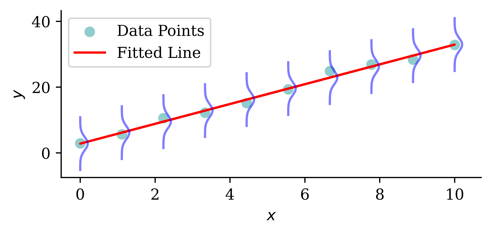
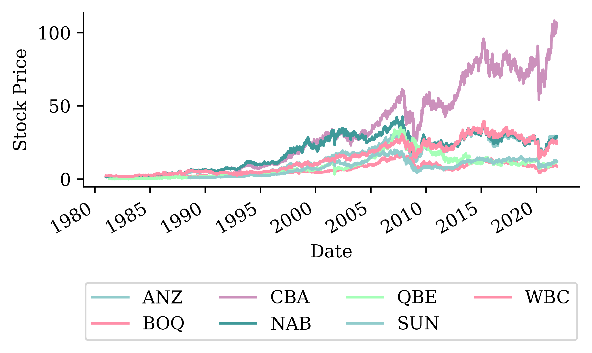
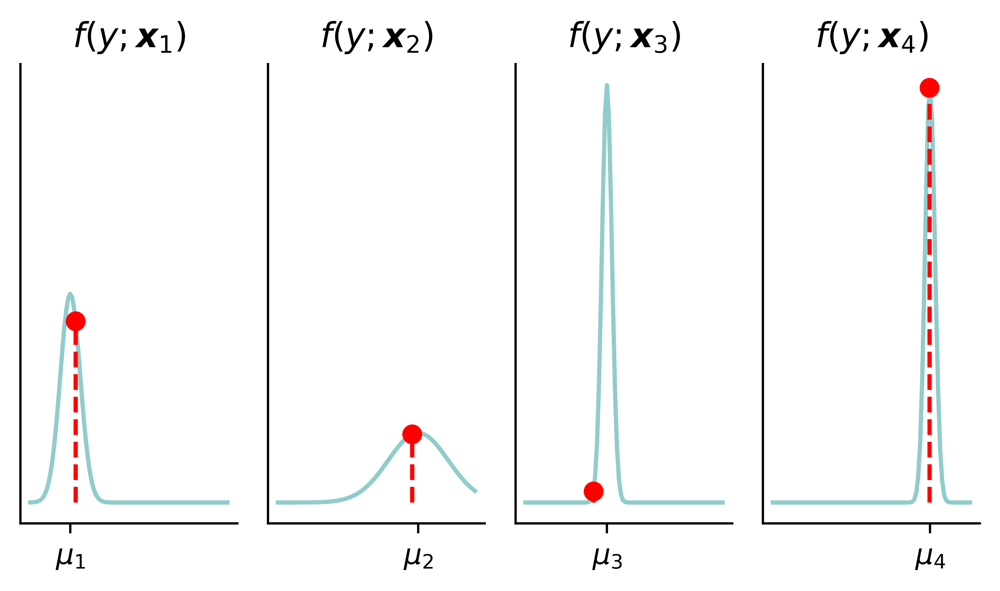
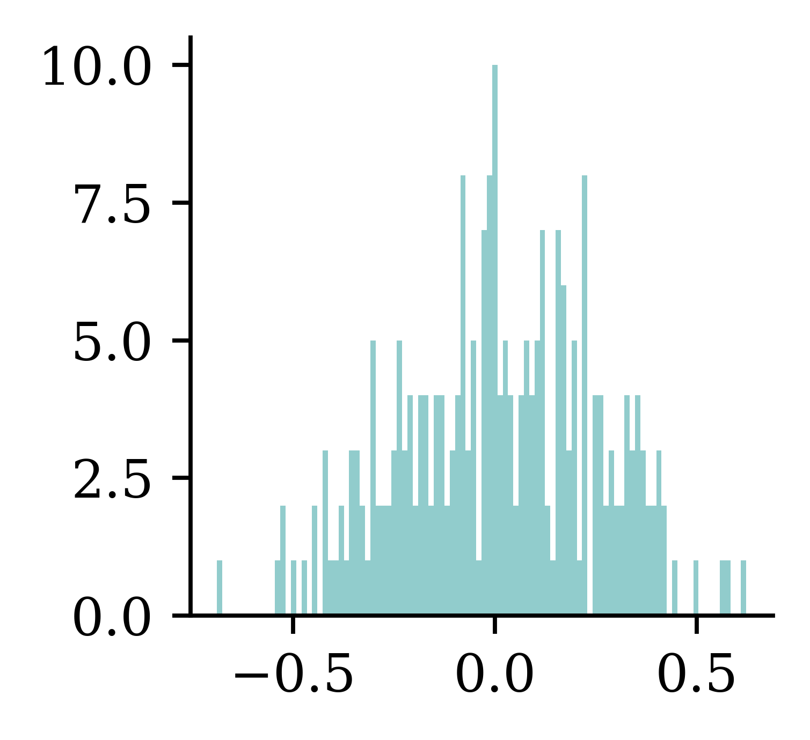
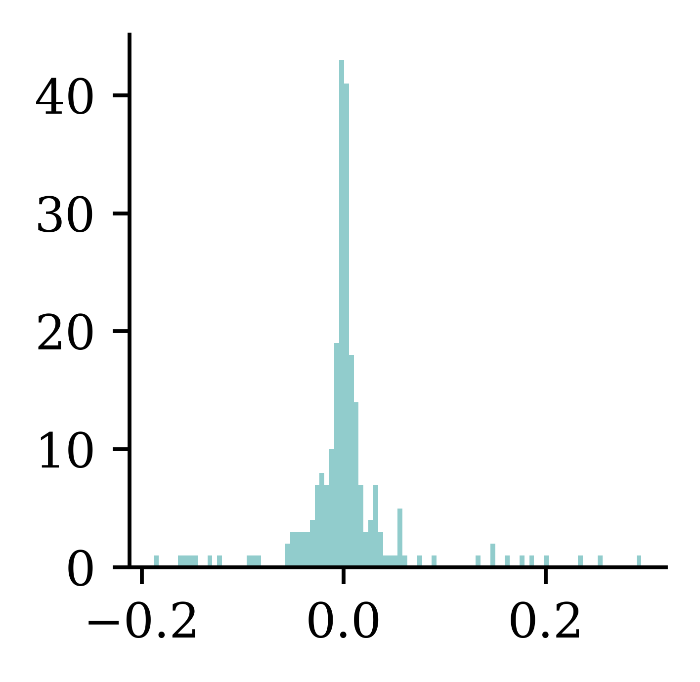
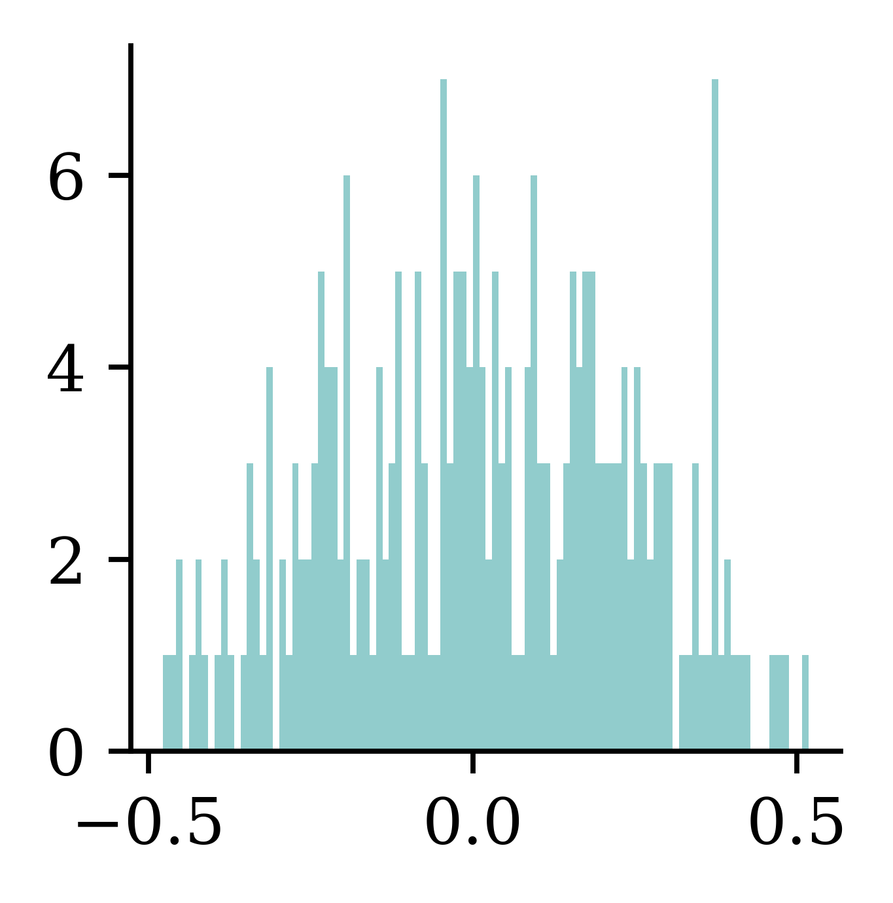
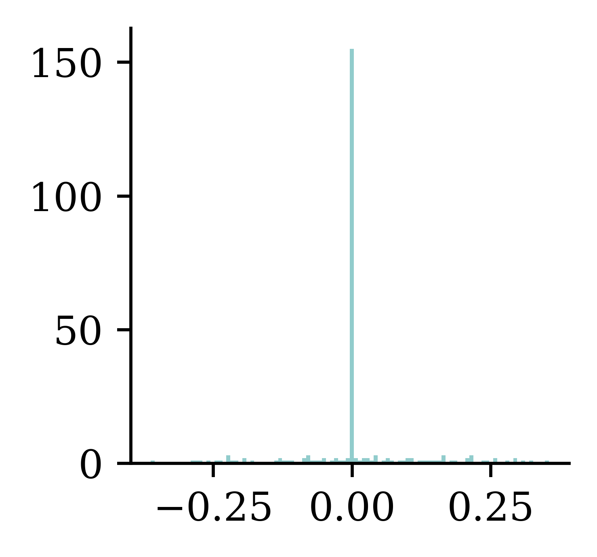

where \hat{y}_i is the predicted value for the ith observation.
Visualising the distribution of each Y
Code
# Generate sample data for linear regressionnp.random.seed(0)X_toy = np.linspace(0, 10, 10)np.random.shuffle(X_toy)beta_0 =2beta_1 =3y_toy = beta_0 + beta_1 * X_toy + np.random.normal(scale=2, size=X_toy.shape)sigma_toy =2# Assuming a standard deviation for the normal distribution# Fit a simple linear regression modelcoefficients = np.polyfit(X_toy, y_toy, 1)predicted_y = np.polyval(coefficients, X_toy)# Plot the data points and the fitted lineplt.scatter(X_toy, y_toy, label='Data Points')plt.plot(X_toy, predicted_y, color='red', label='Fitted Line')# Draw the normal distribution bell curve sideways at each data pointfor i inrange(len(X_toy)): mu = predicted_y[i] y_values = np.linspace(mu -4*sigma_toy, mu +4*sigma_toy, 100) x_values = stats.norm.pdf(y_values, mu, sigma_toy) + X_toy[i] plt.plot(x_values, y_values, color='blue', alpha=0.5)plt.xlabel('$x$')plt.ylabel('$y$')plt.legend()

The probabilistic view
Y_i \sim \mathcal{N}(\mu_i, \sigma^2)
where \mu_i = \beta_0 + \beta_1 x_{i1} + \ldots + \beta_p x_{ip}, and the \sigma^2 is known.
The \mathcal{N}(\mu, \sigma^2) normal distribution has p.d.f.
A gamma distribution with mean \mu and dispersion \phi has p.d.f.
f(y; \mu, \phi) = \frac{(\mu \phi)^{-\frac{1}{\phi}}}{\Gamma\left(\frac{1}{\phi}\right)} y^{\frac{1}{\phi} - 1} \mathrm{e}^{-\frac{y}{\mu \phi}}
Our model is Y|\boldsymbol{X}=\boldsymbol{x} is gamma distributed with a dispersion of \phi and a mean of \mu(\boldsymbol{x}; \boldsymbol{\beta}) = \exp\left(\left\langle \boldsymbol{\beta}, \boldsymbol{x} \right\rangle\right).
The likelihood function is
L(\boldsymbol{\beta}) = \prod_{i=1}^n \frac{(\mu_i \phi)^{-\frac{1}{\phi}}}{\Gamma\left(\frac{1}{\phi}\right)} y_i^{\frac{1}{\phi} - 1} \exp\left(-\frac{y_i}{\mu_i \phi}\right)
Since \phi is a nuisance parameter
\text{NLL}(\boldsymbol{\beta})
= \sum_{i=1}^n \left[ \frac{1}{\phi} \log(\mu_i) + \frac{y_i}{\mu_i \phi} \right] + \text{const}
\propto \sum_{i=1}^n \left[ \log(\mu_i) + \frac{y_i}{\mu_i} \right].
Note
As \log(\mu_i) = \log(y_i) - \log(y_i / \mu_i), we could write an alternative version
\text{NLL}(\boldsymbol{\beta})
\propto \sum_{i=1}^n \left[ \log(y_i) - \log\Bigl(\frac{y_i}{\mu_i}\Bigr) + \frac{y_i}{\mu_i} \right]
\propto \sum_{i=1}^n \left[ \frac{y_i}{\mu_i} - \log\Bigl(\frac{y_i}{\mu_i}\Bigr) \right].
Why do actuaries use GLMs?
GLMs are interpretable.
GLMs are flexible (can handle different types of response variables).
We get the full distribution of the response variable, not just the mean.
This last point is particularly important for analysing worst-case scenarios.
Stochastic Forecasts
Stock price forecasting
Code
def lagged_timeseries(df, target, window=30): lagged = pd.DataFrame()for i inrange(window, 0, -1): lagged[f"T-{i}"] = df[target].shift(i) lagged["T"] = df[target].valuesreturn laggedstocks = pd.read_csv("../Time-Series-And-Recurrent-Neural-Networks/aus_fin_stocks.csv")stocks["Date"] = pd.to_datetime(stocks["Date"])stocks = stocks.set_index("Date")_ = stocks.pop("ASX200")stock = stocks[["CBA"]]stock = stock.ffill()df_lags = lagged_timeseries(stock, "CBA", 40)# Split the data in timeX_train = df_lags.loc[:"2018"]X_val = df_lags.loc["2019"]X_test = df_lags.loc["2020":]# Remove any with NAs and split into X and yX_train = X_train.dropna()X_val = X_val.dropna()X_test = X_test.dropna()y_train = X_train.pop("T")y_val = X_val.pop("T")y_test = X_test.pop("T")X_train = X_train /100X_val = X_val /100X_test = X_test /100y_train = y_train /100y_val = y_val /100y_test = y_test /100lr = LinearRegression()lr.fit(X_train, y_train);stocks.plot()plt.ylabel("Stock Price")plt.legend(loc="upper center", bbox_to_anchor=(0.5, -0.5), ncol=4);

Noisy auto-regressive forecast
def noisy_autoregressive_forecast(model, X_val, sigma, suppress=False):""" Generate a multi-step forecast using the given model. """ multi_step = pd.Series(index=X_val.index, name="Multi Step")# Initialize the input data for forecasting input_data = X_val.iloc[0].values.reshape(1, -1)for i inrange(len(multi_step)):# Ensure input_data has the correct feature names input_df = pd.DataFrame(input_data, columns=X_val.columns)if suppress: next_value = model.predict(input_df, verbose=0)else: next_value = model.predict(input_df) next_value += np.random.normal(0, sigma) multi_step.iloc[i] = next_value# Append that prediction to the input for the next forecastif i +1<len(multi_step): input_data = np.append(input_data[:, 1:], next_value).reshape(1, -1)return multi_step
/home/plaub/miniconda3/envs/ai2024/lib/python3.11/site-packages/scipy/stats/_morestats.py:1882: UserWarning: p-value may not be accurate for N > 5000.
warnings.warn("p-value may not be accurate for N > 5000.")
As freMTPL2sev just has Policy ID & severity, we merge with freMTPL2freq which has Policy ID, # Claims, and other covariables.
sev = pd.read_csv('freMTPL2sev.csv')cov = pd.read_csv('freMTPL2freq.csv').drop(columns=['ClaimNb'])1sev = pd.merge(sev, cov, on='IDpol', how='left').drop(columns=["IDpol"]).dropna()sev
1
Merges the severity dataframe sev with the covariates in covariates by matching the IDpol column. Assigning how='left' ensures that all rows from the left dataset sev is considered, and only the matching columns from covariates are selected. Also drops the policy ID column and any missing values or/and NAN values.
ClaimAmount
Exposure
VehPower
VehAge
DrivAge
BonusMalus
VehBrand
VehGas
Area
Density
Region
0
995.20
0.59
11.0
0.0
39.0
56.0
B12
Diesel
D
778.0
Picardie
1
1128.12
0.95
4.0
1.0
49.0
50.0
B12
Regular
E
2354.0
Ile-de-France
...
...
...
...
...
...
...
...
...
...
...
...
26637
767.55
0.43
6.0
0.0
67.0
50.0
B2
Diesel
C
142.0
Languedoc-Roussillon
26638
1500.00
0.28
7.0
2.0
36.0
60.0
B12
Diesel
D
1732.0
Rhone-Alpes
26444 rows × 11 columns
Preprocessing
Next we carry out some basic preprocessing. The column transformer first applies ordinal encoding to Area and VehGas variables, and applies standard scaling to all remaining numerical values. To simplify things, VehBrand and Region variables are dropped from the dataframe. The column transformer is then applied to both training and test sets.
Plotting the empirical distribution of the target variable ClaimAmount help us get an understanding of the inherent variability associated with the data.
The following section illustrates how embedding a GLM in a neural network architecture can help us quantify the uncertainty relating to the predictions coming from the neural network. The idea is to first fit a GLM, and use the predictions from the GLM and predictions from the neural network part to define a custom loss function. This embedding presents an opportunity to compute the dispersion parameter \phi_{CANN} for the neural network.
The idea of GLM is to find a linear combination of independent variables \boldsymbol{x} and coefficients \boldsymbol{\beta}, apply a non-linear transformation (g^{-1}) to that linear combination and set it equal to conditional mean of the response variable Y given an instance \boldsymbol{x}. The non-linear transformation provides added flexibility.
Doesn’t prove that Y | \boldsymbol{X} = \boldsymbol{x} is multimodal
Code
# Make some example where the distribution is multimodal because of a binary covariate which separates the means of the two distributionsnp.random.seed(1)fig, axes = plt.subplots(3, 1, figsize=(5.0, 3.0), sharex=True)x_min =0x_max = y_train.max()x_grid = np.linspace(x_min, x_max, 100)# Simulate some data from an exponential distribution which has Pr(X < 1000) = 0.9n =100p =0.1lambda_ =-np.log(p) /1000mu =1/ lambda_y_1 = np.random.exponential(scale=mu, size=n)# Pick a truncated normal distribution with a mean of 1100 and std of 250 (truncated to be positive)mu =1100sigma =100y_2 = stats.truncnorm.rvs((0- mu) / sigma, (np.inf - mu) / sigma, loc=mu, scale=sigma, size=n)# Combine y_1 and y_2 for the final histogramy = np.concatenate([y_1, y_2])# Determine common binsbins = np.histogram_bin_edges(y, bins=30)# Plot each normal distribution with different means verticallyfor i, ax inenumerate(axes):if i ==0: ax.hist(y_1, bins=bins, density=True, color=colors[i+1]) ax.set_ylabel(f'$f(y | x = 1)$')elif i ==1: ax.hist(y_2, bins=bins, density=True, color=colors[i+1]) ax.set_ylabel(f'$f(y | x = 2)$')else: ax.hist(y, bins=bins, density=True) ax.set_ylabel(f'$f(y)$')plt.tight_layout();
Then, it estimates the conditional mean of Y given a new instance \boldsymbol{x}=(1, x_1, x_2, x_3) as follows:
\mathbb{E}[Y|\boldsymbol{X}=\boldsymbol{x}] = g^{-1}(\langle \boldsymbol{\beta}, \boldsymbol{x}\rangle) = \exp\big(\beta_0 + \beta_1 x_1 + beta_2 x_2 + \beta_3 x_3 \big).
A GLM can model any other exponential family distribution using an appropriate link function g.
Gamma GLM loss
If Y|\boldsymbol{X}=\boldsymbol{x} is a gamma r.v. with mean \mu(\boldsymbol{x}; \boldsymbol{\beta}) and dispersion parameter \phi, we can minimise the negative log-likelihood (NLL)
\text{NLL} \propto \sum_{i=1}^{n}\log \mu (\boldsymbol{x}_i; \boldsymbol{\beta})+\frac{y_i}{\mu (\boldsymbol{x}_i; \boldsymbol{\beta})} + \text{const},
i.e., we ignore the dispersion parameter \phi while estimating the regression coefficients.
Fitting Steps
Step 1. Use the advanced second derivative iterative method to find the regression coefficients:
\widehat{\boldsymbol{\beta}} = \underset{\boldsymbol{\beta}}{\text{arg\,min}} \ \sum_{i=1}^{n}\log \mu (\boldsymbol{x}_i; \boldsymbol{\beta})+\frac{y_i}{\mu (\boldsymbol{x}_i; \boldsymbol{\beta})}
(Here, p is the number of coefficients in the model. If this p doesn’t include the intercept, then p should be use \frac{1}{n-(p+1)}.)
Code: Gamma GLM
In Python, we can fit a gamma GLM as follows:
import statsmodels.api as sm# Add a column of ones to include an intercept in the modelX_train_design = sm.add_constant(X_train)# Create a Gamma GLM with a log link functiongamma_glm = sm.GLM(y_train, X_train_design, family=sm.families.Gamma(sm.families.links.Log()))# Fit the modelgamma_glm = gamma_glm.fit()
The above example of fitting a Gamma distribution assumes a constant dispersion, meaning that, the dispersion of claim amount is constant for all policyholders. If we believe that the constant dispersion assumption is quite strong, we can use a double GLM model. Fitting a GLM is the traditional way of modelling a claim amount.
ANN can feed into a GLM
Combining GLM & ANN.
Combined Actuarial Neural Network
CANN
The Combined Actuarial Neural Network is a novel actuarial neural network architecture proposed by Schelldorfer and Wüthrich (2019). We summarise the CANN approach as follows:
Find the coefficients \boldsymbol{\beta} of the GLM with a link function g(\cdot).
Find the weights \boldsymbol{w}_{\text{CANN}} of a neural network \mathcal{M}_{\text{CANN}}:\mathbb{R}^{p}\to\mathbb{R}.
Given a new instance \boldsymbol{x}, we have \mathbb{E}[Y|\boldsymbol{X}=\boldsymbol{x}] = g^{-1}\Big( \langle\boldsymbol{\beta}, \boldsymbol{x}\rangle + \mathcal{M}_{\text{CANN}}(\boldsymbol{x};\boldsymbol{w}_{\text{CANN}})\Big).
Shifting the predicted distributions
Code
# Ensure reproducibilityrandom.seed(1)# Make a 4x1 grid of plotsfig, axes = plt.subplots(4, 1, figsize=(5.0, 3.0), sharex=True)# Define the x-axisx_min =0x_max =5000x_grid = np.linspace(x_min, x_max, 100)# Plot a few gamma distribution pdfs with different means.# Then plot gamma distributions with shifted means and the same dispersion parameter.glm_means = [1000, 3000, 2000, 4000]cann_means = [1500, 1400, 3000, 5000]for i, ax inenumerate(axes): ax.plot(x_grid, stats.gamma.pdf(x_grid, a=2, scale=glm_means[i]/2), label=f'GLM') ax.plot(x_grid, stats.gamma.pdf(x_grid, a=2, scale=cann_means[i]/2), label=f'CANN') ax.set_ylabel(f'$f(y | x_{i+1})$')if i ==0: ax.legend(["GLM", "CANN"], loc="upper right", ncol=2)
Adds a Dense layer with just one neuron, to store the model output (before inverse link function) from the GLM. The linear activation is used to make sure that the output is a linear combination of inputs. The weights are set to be non-trainable, hence the values obtained during GLM fitting will not change during the neural network training process. kernel_initializer=Constant(glm_weights) and bias_initializer=Constant(glm_bias) ensures that weights are initialized with the optimal values estimated from GLM fit.
2
Add the GLM contribution to the neural network output and exponentiate to get the mean estimate.
Since this CANN predicts gamma distributions, we use the gamma NLL loss function.
One intuitive way to capture uncertainty using neural networks would be to estimate the parameters of the target distribution, instead of predicting the value it self. For example, suppose we want to predict y coming from a Gaussian distribution. Most common method would be to predict (\hat{y}) directly using a single neuron at the output layer. Another possible way would be to estimate the parameters (\mu and \sigma) of the y distribution using 2 neurons at the output layer. Estimating parameters of the distribution instead of point estimates for y can help us get an idea about the uncertainty. However, assuming distributional properties at times could be too restrictive. For example, it is possible that the actual distribution of y values is bimodal or multi modal. In such situations, assuming a mixture distribution is more intuitive.
Given a finite set of resulting random variables (Y_1, \ldots, Y_{K}), one can generate a multinomial random variable Y\sim \text{Multinomial}(1, \boldsymbol{\pi}). Meanwhile, Y can be regarded as a mixture of Y_1, \ldots, Y_{K}, i.e.,
Y = \begin{cases}
Y_1 & \text{w.p. } \pi_1, \\
\vdots & \vdots\\
Y_K & \text{w.p. } \pi_K, \\
\end{cases}
where we define a set of finite set of weights \boldsymbol{\pi}=(\pi_{1} \ldots, \pi_{K}) such that \pi_k \ge 0 for k \in \{1, \ldots, K\} and \sum_{k=1}^{K}\pi_k=1.
Mixture Distribution
Let f_{Y_k|\boldsymbol{X}} and F_{Y_k|\boldsymbol{X}} be the p.d.f. and the c.d.f of Y_k|\boldsymbol{X} for all k \in \{1, \ldots, K\}.
The random variable Y|\boldsymbol{X}, which mixes Y_k|\boldsymbol{X}’s with weights \pi_k’s, has the density function
f_{Y|\boldsymbol{X}}(y|\boldsymbol{x}) = \sum_{k=1}^{K}\pi_k(\boldsymbol{x}) f_{k}(y|\boldsymbol{x}),
and the cumulative density function
F_{Y|\boldsymbol{X}}(y|\boldsymbol{x}) = \sum_{k=1}^{K}\pi_k(\boldsymbol{x}) F_{k}(y|\boldsymbol{x}).
Mixture Density Network
A mixture density network (MDN) \mathcal{M}_{\boldsymbol{w}^*} outputs each distribution component’s mixing weights and parameters of Y given the input features \boldsymbol{x}, i.e.,
\mathcal{M}_{\boldsymbol{w}^*}(\boldsymbol{x})=(\boldsymbol{\pi}(\boldsymbol{x};\boldsymbol{w}^*), \boldsymbol{\theta}(\boldsymbol{x};\boldsymbol{w}^*)),
where \boldsymbol{w}^* is the networks’ weights found by minimising the following negative log-likelihood loss function
\mathcal{L}(\mathcal{D}, \boldsymbol{\theta})= - \sum_{i=1}^{n} \log f_{Y|\boldsymbol{X}}(y_i|\boldsymbol{x}, \boldsymbol{w}^*),
where \mathcal{D}=\{(\boldsymbol{x}_i,y_i)\}_{i=1}^{n} is the training dataset.
Mixture Density Network
An MDN that outputs the parameters for a K component mixture distribution. \boldsymbol{\theta}_k(\boldsymbol{x}; \boldsymbol{w}^*)= (\theta_{k,1}(\boldsymbol{x}; \boldsymbol{w}^*), \ldots, \theta_{k,|\boldsymbol{\theta}_k|}(\boldsymbol{x}; \boldsymbol{w}^*)) consists of the parameter estimates for the kth mixture component.
Model Specification
Suppose there are two types of claims:
Type I: Y_1|\boldsymbol{X}=\boldsymbol{x}\sim \text{Gamma}(\alpha_1(\boldsymbol{x}), \beta_1(\boldsymbol{x})) and,
Type II: Y_2|\boldsymbol{X}=\boldsymbol{x}\sim \text{Gamma}(\alpha_2(\boldsymbol{x}), \beta_2(\boldsymbol{x})).
The density of the actual claim amount Y|\boldsymbol{X}=\boldsymbol{x} follows
\begin{align*}
f_{Y|\boldsymbol{X}}(y|\boldsymbol{x})
&= \pi_1(\boldsymbol{x})\cdot \frac{\beta_1(\boldsymbol{x})^{\alpha_1(\boldsymbol{x})}}{\Gamma(\alpha_1(\boldsymbol{x}))}\mathrm{e}^{-\beta_1(\boldsymbol{x})y}y^{\alpha_1(\boldsymbol{x})-1} \\
&\quad + (1-\pi_1(\boldsymbol{x}))\cdot \frac{\beta_2(\boldsymbol{x})^{\alpha_2(\boldsymbol{x})}}{\Gamma(\alpha_2(\boldsymbol{x}))}\mathrm{e}^{-\beta_2(\boldsymbol{x})y}y^{\alpha_2(\boldsymbol{x})-1}.
\end{align*}
where \pi_1(\boldsymbol{x}) is the probability of a Type I claim given \boldsymbol{x}.
Output
The aim is to find the optimum weights
\boldsymbol{w}^* = \underset{w}{\text{arg\,min}} \ \mathcal{L}(\mathcal{D}, \boldsymbol{w})
for the Gamma mixture density network \mathcal{M}_{\boldsymbol{w}^*} that outputs the mixing weights, shapes and scales of Y given the input features \boldsymbol{x}, i.e.,
\begin{align*}
\mathcal{M}_{\boldsymbol{w}^*}(\boldsymbol{x})
= ( &\pi_1(\boldsymbol{x}; \boldsymbol{w}^*),
\pi_2(\boldsymbol{x}; \boldsymbol{w}^*), \\
&\alpha_1(\boldsymbol{x}; \boldsymbol{w}^*),
\alpha_2(\boldsymbol{x}; \boldsymbol{w}^*), \\
&\beta_1(\boldsymbol{x}; \boldsymbol{w}^*),
\beta_2(\boldsymbol{x}; \boldsymbol{w}^*)
).
\end{align*}
Architecture
We demonstrate the structure of a gamma MDN that outputs the parameters for a gamma mixture with two components.
Code: Import “legacy” Keras (for now)
import tf_keras
Code: Architecture
The following code resembles the architecture of the architecture of the gamma MDN from the previous slide.
Defines the input layer with the number of neurons being equal to the number of input features
3
Specifies the hidden layers of the neural network
4
Specifies the neurons of the output layer. Here, softmax is used for \pi values as they must sum up to 1. exponential activation is used for both \alpha’s and \beta’s as they must be non-negative.
5
Combines all of the outputs since Keras’ loss function requires a single output (which will now have 6 columns).
Loss Function
The negative log-likelihood loss function is given by
\mathcal{L}(\mathcal{D}, \boldsymbol{w})
= - \frac{1}{n} \sum_{i=1}^{n} \log \ f_{Y|\boldsymbol{X}}(y_i|\boldsymbol{x}, \boldsymbol{w})
where the f_{Y|\boldsymbol{X}}(y_i|\boldsymbol{x}, \boldsymbol{w}) is defined by
\begin{align*}
&\pi_1(\boldsymbol{x};\boldsymbol{w})\cdot \frac{\beta_1(\boldsymbol{x};\boldsymbol{w})^{\alpha_1(\boldsymbol{x};\boldsymbol{w})}}{\Gamma(\alpha_1(\boldsymbol{x};\boldsymbol{w}))}\mathrm{e}^{-\beta_1(\boldsymbol{x};\boldsymbol{w})y}y^{\alpha_1(\boldsymbol{x};\boldsymbol{w})-1} \\
& \quad + (1-\pi_1(\boldsymbol{x};\boldsymbol{w}))\cdot \frac{\beta_2(\boldsymbol{x};\boldsymbol{w})^{\alpha_2(\boldsymbol{x};\boldsymbol{w})}}{\Gamma(\alpha_2(\boldsymbol{x};\boldsymbol{w}))}\mathrm{e}^{-\beta_2(\boldsymbol{x};\boldsymbol{w})y}y^{\alpha_2(\boldsymbol{x};\boldsymbol{w})-1}
\end{align*}
Compiles the model using adam optimizer and the gamma_mixture_nll (negative log likelihood) as the loss function
2
Fits the model using the training data, with a validation split
Metrics for Distributional Regression
Proper Scoring Rules
Proper scoring rules provide a summary measure for the performance of the probabilistic predictions. They are useful in comparing performances across models.
Definition
A scoring rule is the equivalent of a loss function for distributional regression.
Denote S(F, y) to be the score given to the forecasted distribution F and an observation y \in \mathbb{R}.
Definition
A scoring rule is called proper if
\mathbb{E}_{Y \sim Q} S(Q, Y) \le \mathbb{E}_{Y \sim Q} S(F, Y)
for all F and Q distributions.
It is called strictly proper if equality holds only if F = Q.
Example Proper Scoring Rules
Logarithmic Score (NLL)
The logarithmic score is defined as
\mathrm{LogS}(f, y) = - \log f(y),
where f is the predictive density.
Continuous Ranked Probability Score (CRPS)
The continuous ranked probability score is defined as
\mathrm{crps}(F, y) = \int_{-\infty}^{\infty} (F(t) - {1}_{t\ge y})^2 \ \mathrm{d}t,
where F is the predicted c.d.f.
Likelihoods
Code
y_pred = np.polyval(coefficients, X_toy[:4])y_pred[2] *=1.1sigma_preds = sigma_toy * np.array([1.0, 3.0, 0.5, 0.5])fig, axes = plt.subplots(1, 4, figsize=(5.0, 3.0), sharey=True)x_min = y_pred[:4].min() -4*sigma_toyx_max = y_pred[:4].max() +4*sigma_toyx_grid = np.linspace(x_min, x_max, 100)# Plot each normal distribution with different means verticallyfor i, ax inenumerate(axes): y_grid = stats.norm.pdf(x_grid, y_pred[i], sigma_preds[i]) ax.plot(x_grid, y_grid) ax.plot([y_toy[i], y_toy[i]], [0, stats.norm.pdf(y_toy[i], y_pred[i], sigma_preds[i])], color='red', linestyle='--') ax.scatter([y_toy[i]], [stats.norm.pdf(y_toy[i], y_pred[i], sigma_preds[i])], color='red', zorder=10) ax.set_title(f'$f(y ; \\boldsymbol{{x}}_{{{i+1}}})$') ax.set_xticks([y_pred[i]], labels=[r'$\mu_{'+str(i+1) +r'}$'])# ax.set_ylim(0, 0.25)# Turn off the y axes ax.yaxis.set_visible(False)plt.tight_layout();

Code: NLL
def gamma_nll(mean, dispersion, y):# Calculate shape and scale parameters from mean and dispersion shape =1/ dispersion; scale = mean * dispersion# Create a gamma distribution object gamma_dist = stats.gamma(a=shape, scale=scale)return-np.mean(gamma_dist.logpdf(y))# GLMX_test_design = sm.add_constant(X_test)mus = gamma_glm.predict(X_test_design)nll_glm = gamma_nll(mus, phi_glm, y_test)# CANNmus = cann.predict(X_test, verbose=0)nll_cann = gamma_nll(mus, phi_cann, y_test)# MDNnll_mdn = gamma_mdn.evaluate(X_test, y_test, verbose=0)
The above results show that MDN provides the lowest value for the Logarithmic Score (NLL). Low values for NLL indicate better calibration. One possible reason for the better performance of the MDN model (compared to the Gamma model) is the added flexibility from multiple modelling components. The multiple modelling components in the MDN model, together, can capture the inherent variation in the data better.
Aleatoric and Epistemic Uncertainty
Uncertainty in deep learning refers to the level of doubt one would have about the predictions made by an AI-driven algorithm. Identifying and quantifying different sources of uncertainty that could exist in AI-driven algorithms is therefore important to ensure a credible application.
Categories of uncertainty
There are two major categories of uncertainty in statistical or machine learning:
Aleatoric uncertainty
Epistemic uncertainty
Since there is no consensus on the definitions of aleatoric and epistemic uncertainty, we provide the most acknowledged definitions in the following slides.
Aleatoric Uncertainty
Aleatoric uncertainty refers to the inherent variability associated with the data generating process. Among many ways to capture the aleatoric uncertainty, (i) combining with probabilistic models and (ii) considering mixture models are two useful methods to quantify the inherent variability.
Qualitative Definition
Aleatoric uncertainty refers to the statistical variability and inherent noise with data distribution that modelling cannot explain.
Quantitative Definition
\text{Ale}(Y|\boldsymbol{X}=\boldsymbol{x}) = \mathbb{V}[Y|\boldsymbol{X}=\boldsymbol{x}],i.e., if Y|\boldsymbol{X}=\boldsymbol{x} \sim \mathcal{N}(\mu, \sigma^2), the aleatoric uncertainty would be \sigma^2. Simply, it is the conditional variance of the response variable Y given features/covariates \boldsymbol{x}.
Epistemic Uncertainty
Qualitative Definition
Epistemic uncertainty refers to the lack of knowledge, limited data information, parameter errors and model errors.
i.e., the total uncertainty subtracting the aleatoric uncertainty \mathbb{V}[Y|\boldsymbol{X}=\boldsymbol{x}] would be the epistemic uncertainty.
Sources of uncertainty
There are many sources of uncertainty in statistical or machine learning models. Parameter error stems primarily due to lack of data. Model error stems from assuming wrong distributional properties of the data. Data uncertainty arises due to the lack of confidence we may have about the quality of the collected data. Noisy data, inconsistent data, data with missing values or data with missing important variables can result in data uncertainty.
If you decide to predict the claim amount of an individual using a deep learning model, which source(s) of uncertainty are you dealing with?
The inherent variability of the data-generating process \rightarrow aleatoric uncertainty.
Data uncertainty \rightarrow epistemic uncertainty.
Avoiding Overfitting
Traditional regularisation
Say all the m weights (excluding biases) are in the vector \boldsymbol{\theta}. If we change the loss function to
\text{Loss}_{1:n}
= \frac{1}{n} \sum_{i=1}^n \text{Loss}_i
+ \lambda \sum_{j=1}^{m} \left| \theta_j \right|
this would be using L^1 regularisation. A loss like
model = l2_model(0.0)weights = model.layers[0].get_weights()[0].flatten()print(f"Number of weights almost 0: {np.sum(np.abs(weights) <1e-5)}")plt.hist(weights, bins=100);
Number of weights almost 0: 0

model = l2_model(1.0)weights = model.layers[0].get_weights()[0].flatten()print(f"Number of weights almost 0: {np.sum(np.abs(weights) <1e-5)}")plt.hist(weights, bins=100);
Number of weights almost 0: 0

Weights before & after L^1
model = l1_model(0.0)weights = model.layers[0].get_weights()[0].flatten()print(f"Number of weights almost 0: {np.sum(np.abs(weights) <1e-5)}")plt.hist(weights, bins=100);
Number of weights almost 0: 0

model = l1_model(1.0)weights = model.layers[0].get_weights()[0].flatten()print(f"Number of weights almost 0: {np.sum(np.abs(weights) <1e-5)}")plt.hist(weights, bins=100);
Number of weights almost 0: 36

Early-stopping regularisation
A very different way to regularize iterative learning algorithms such as gradient descent is to stop training as soon as the validation error reaches a minimum. This is called early stopping… It is such a simple and efficient regularization technique that Geoffrey Hinton called it a “beautiful free lunch”.
Alternatively, you can try building a model with slightly more layers and neurons than you actually need, then use early stopping and other regularization techniques to prevent it from overfitting too much. Vincent Vanhoucke, a scientist at Google, has dubbed this the “stretch pants” approach: instead of wasting time looking for pants that perfectly match your size, just use large stretch pants that will shrink down to the right size.
Dropout
Dropout
Dropout is one of the most popular methods for reducing the risk of overfitting. Dropout is the act of randomly selecting a proportion of neurons and deactivating them during each training iteration. It is a regularization technique that aims to reduce overfitting and improve the generalization ability of the model.
An example of neurons dropped during training.
Dropout quote #1
It’s surprising at first that this destructive technique works at all. Would a company perform better if its employees were told to toss a coin every morning to decide whether or not to go to work? Well, who knows; perhaps it would! The company would be forced to adapt its organization; it could not rely on any single person to work the coffee machine or perform any other critical tasks, so this expertise would have to be spread across several people. Employees would have to learn to cooperate with many of their coworkers, not just a handful of them.
Dropout quote #2
The company would become much more resilient. If one person quit, it wouldn’t make much of a difference. It’s unclear whether this idea would actually work for companies, but it certainly does for neural networks. Neurons trained with dropout cannot co-adapt with their neighboring neurons; they have to be as useful as possible on their own. They also cannot rely excessively on just a few input neurons; they must pay attention to each of their input neurons. They end up being less sensitive to slight changes in the inputs. In the end, you get a more robust network that generalizes better.
Code: Dropout
Dropout is just another layer in Keras.
The following code shows how we can apply a dropout to each hidden layer in the neural network. The dropout rate for each layer is 0.2. There is also an option called seed in the Dropout function, which can be used to ensure reproducibility.
Making predictions is the same as any other model:
Dropout has no impact on model predictions because Dropout function is carried out only during the training stage. Once the model finishes its training (once the weights and biases are computed), all neurons together contribute to the predictions(no dropping out during the prediction stage). Therefore, predictions from the model will not change across different runs.
By setting the training=True, we can let drop out happen during prediction stage as well. This will change predictions for the same output different. This is known as the Monte Carlo dropout.
Train M neural networks with different random initial weights independently (even in parallel).
def build_model(seed): random.seed(seed) model = Sequential([ Dense(30, activation="leaky_relu"), Dense(1, activation="exponential") ]) model.compile("adam", "mse") es = EarlyStopping(restore_best_weights=True, patience=5) model.fit(X_train_sc, y_train, epochs=1_000, callbacks=[es], validation_data=(X_val_sc, y_val), verbose=False)return model
M =3seeds =range(M)models = []for seed in seeds: models.append(build_model(seed))
Deep Ensembles II
Say the trained weights by \boldsymbol{w}^{(1)}, \ldots, \boldsymbol{w}^{(M)}, then we get predictions \bigl\{ \hat{y}(\boldsymbol{x}; \boldsymbol{w}^{(m)}) \bigr\}_{m=1}^{M}
y_preds = []for model in models: y_preds.append(model.predict(X_test_sc, verbose=0))y_preds = np.array(y_preds)y_preds
from watermark import watermarkprint(watermark(python=True, packages="keras,matplotlib,numpy,pandas,seaborn,scipy,torch,tensorflow,tensorflow_probability,tf_keras"))


{kind=link}